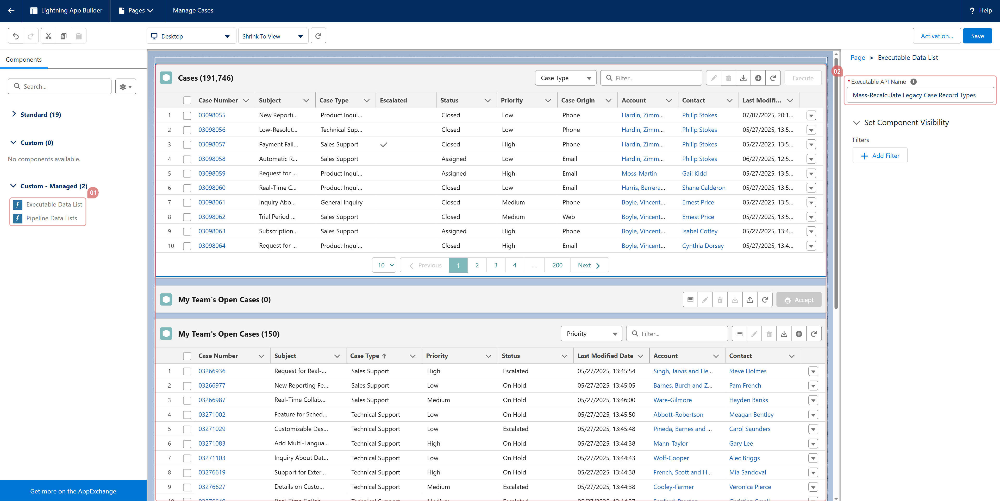

<section>
    <p>
      To embed a Data List in the Lightning UI:
    </p>
    <ul>
      <li>
        Open <strong>Lightning App Builder</strong> for a <strong>Record Page</strong>, 
        <strong>Home Page</strong>, or <strong>App Page</strong>.
      </li>
      <li>
        Drag and drop either:<br />
        &nbsp; &nbsp; - <strong>“Executable Data List”</strong> to embed a single Data List<br />
        &nbsp; &nbsp; - <strong>“Pipeline Data Lists”</strong> to embed a group of Data Lists 
        from a Pipeline
      </li>
      <li>
        Enter the <strong>API Name</strong> of the corresponding 
        <strong>Executable</strong> or <strong>Pipeline</strong>.
      </li>
    </ul>
    <p>
      📌 This allows you to display interactive, no-code Data Lists directly within 
      the Lightning experience—tailored to your users’ workflows.
    </p>
  </section>
  
  